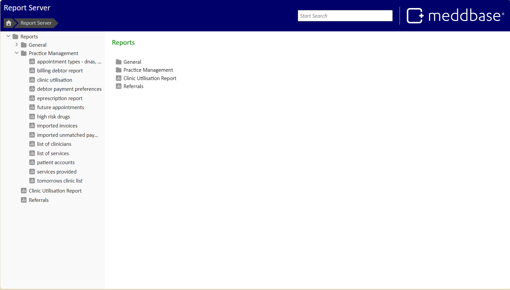
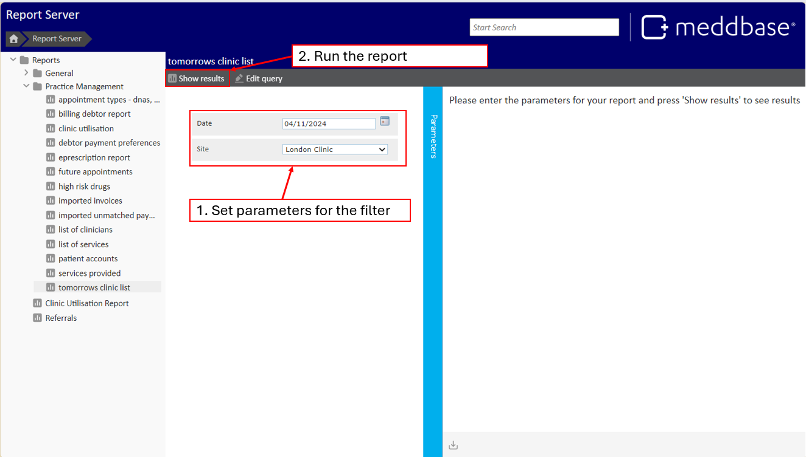
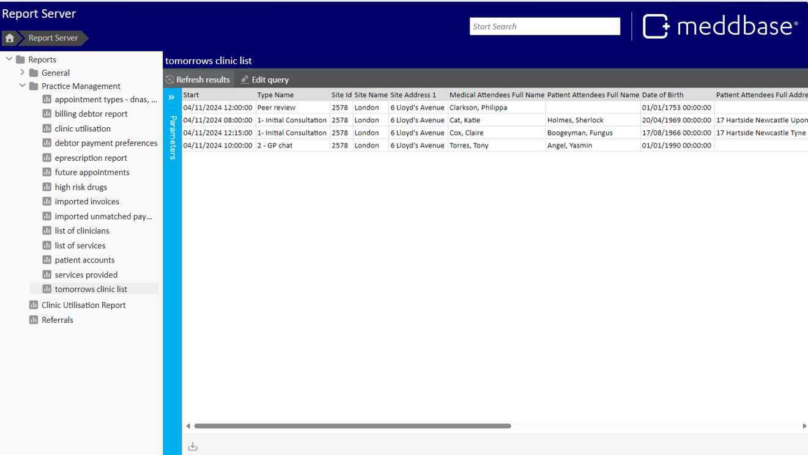
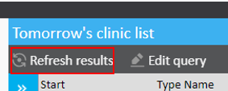
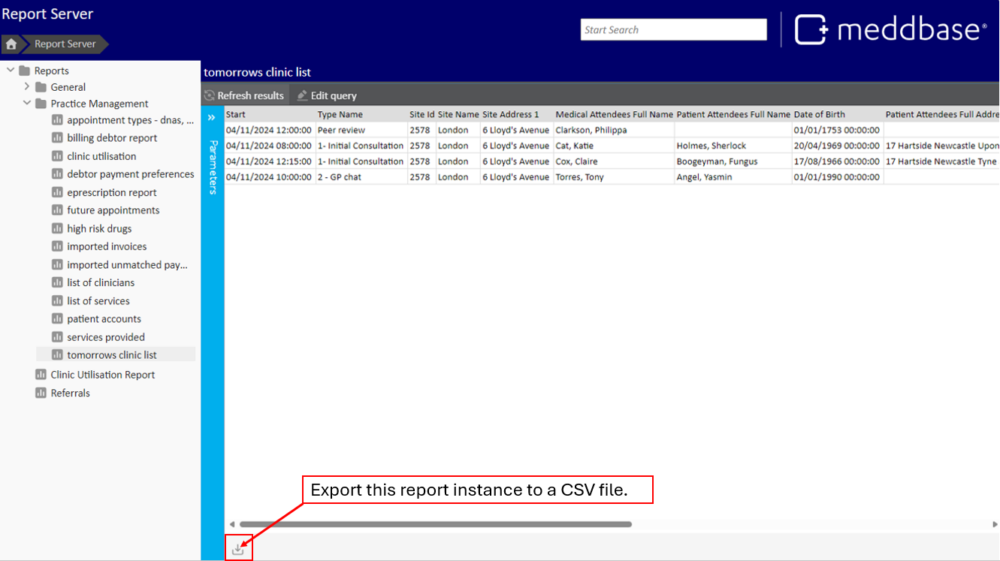

When analytics and data tracking are at the forefront of your business, it is important to have the correct tools. The Meddbase Report Query Builder is a powerful tool for handling the vast amounts of data your system can collect. From appointments to demographics, accounts to referrals, your data can be pulled into functional, powerful reports. These reports, once created and published, are stored on the reports server, where they remain accessible for continuous use to approved users.
This article offers a step-by-step guide on accessing, running, and managing report instances in the system. You’ll learn how to view reports stored on the reports server, customise parameters, run and refresh results, and export data for further analysis.
This article is broken down into the following sections:
Go to Start Page > Reports. This page lists all published report instances available on the reports server, some of which may be organised into folders.
Access to the Report Server is governed by permissions. The data inside a report is also governed by permissions. If you are not are unable to view the reports server or issues viewing data in a report, please speak to your System Administrator.

Select the report you want to run. If parameters are required, you’ll see options to fill in using drop-downs, pickers, checkboxes, or fields. Once all parameters are set, click Show Results to run the report.


The report results will be displayed in a table. If adjustments are needed, update the parameters and click Refresh Results to rerun the report.

To archive or further analyse data in Excel, click Export to CSV in the bottom left corner to download the report. Once downloaded, this CSV file can be opened in Excel or any Get Data software for further analysis and visualisation.

For the following action, only those with permissions to build reports will be able to edit reports and view the Report Management tile.
If changes to the report setup are needed, select Edit Query. This takes you to Admin > Report Management, where you can modify the report query.
For guidance on creating new reports and instances, refer to the Report Query Builder - Introduction and report examples.